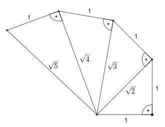

Aufgabe 92 Bestimmen Sie eine explizite und eine rekursive Darstellung der Glieder der Folge der dargestellten "Wurzelschnecke".

Die dargestellten Dreiecke sind rechtwinklig: Für alle Dreiecke gilt der Satz von Pythagoras. 1. Dreieck a12 = 12 + 12 = 2 |√ a1 = √2 2. Dreieck a22 = 12 + (√2)2 = 1 + 2 = 3 |√ a2 = √3 3. Dreieck a32 = 12 + (√3)2 = 1 + 3 = 4 |√ a3 = √4 = 2 4. Dreieck a42 = 12 + (√4)2 = 1 + 4 = 5 |√ a4 = √5 . . . n.tes Dreieck an2 = 12 + (√n)2 = 1 + n |√ Explizite Darstellung: an = Rekursive Darstellung: a1 = √2 an =